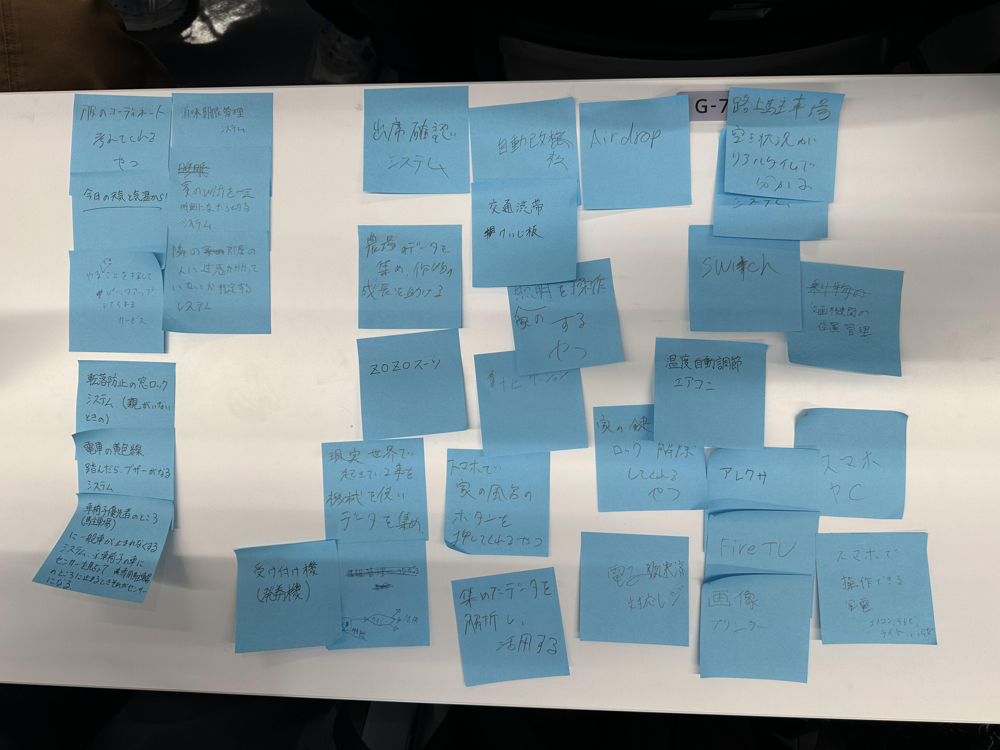
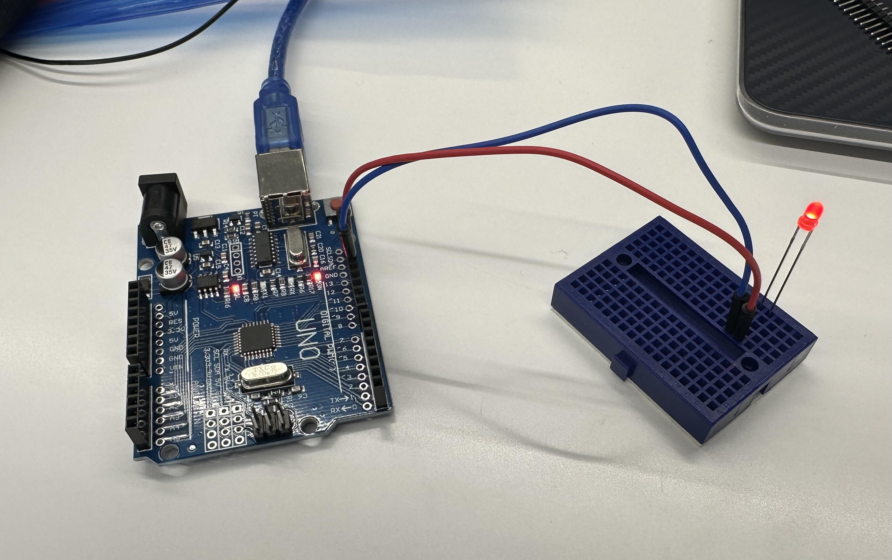

第一回
IOTについて
IoTは"Internet of Things"の略でモノのインターネットと訳されている。
IoT：Internet of Things（モノのインターネット）とはモノがインターネット経由で通信することを意味する。
IoT：Internet of Things（モノのインターネット）という言葉ができる以前、インターネットはコンピュータ同士を接続するためのものであった。
現在、テレビやデジタルカメラ、デジタルレコーダーや最近話題のスマートスピーカー等のデジタル情報家電をインターネットに接続する流れは増加している。
デジタル化された映像、音楽、音声、写真、文字情報や様々なデータがインターネットを介して伝達されるシーンが今後ますます増えて行くだろうとされている。
ポストイット

マイコンボード
